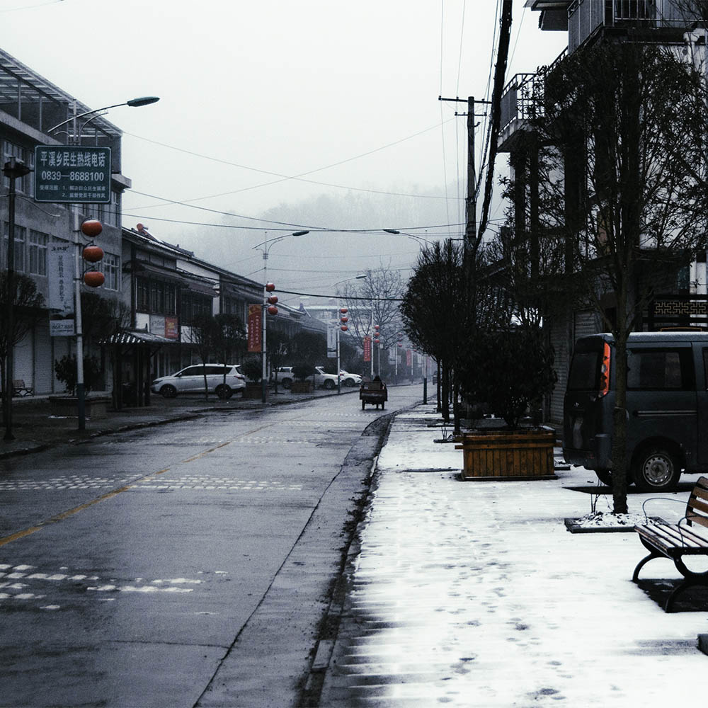

煮雪
"传说在北极的人因为天寒地冻，一开口说话就结成冰雪
对方听不见，只好回家慢慢地烤来听。
遇到谈情说爱的时候，回家就要仔细酿造当时的气氛
先用情诗情词裁冰，把它切成细细的碎片
加上一点酒来煮，那么，煮出来的话便能使人微醉。
倘若情浓，则不可以用炉火，要用烛火再加一杯咖啡
才不会醉得太厉害，还能维持一丝清醒。
如果失恋，等不到冰雪尽溶的时候
就放一把大火把雪都烧了，烧成另一个春天。"

"It is said that the people in the Arctic became frozen in snow when they spoke cold.
The other party couldn't hear it and had to go home slowly to bake and listen.
When you are in love, you must carefully brew the atmosphere at home
First cut the ice with love words and cut it into fine pieces
Add a bit of wine to cook, then it will make people slightly drunk.
If it ’s strong, do n’t use the fire, use a candle and add a cup of coffee
You won't get drunk too much, and you can still maintain a sense of sobriety.
If you fall in love, you ca n’t wait for the snow and ice to melt
Just set a fire to burn all the snow and burn it into another spring. "